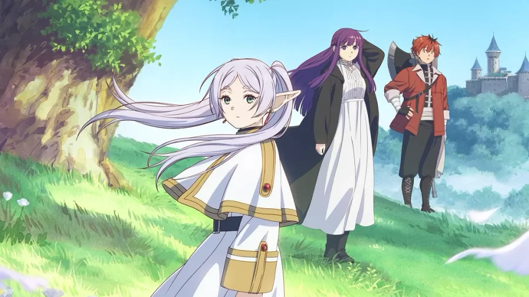
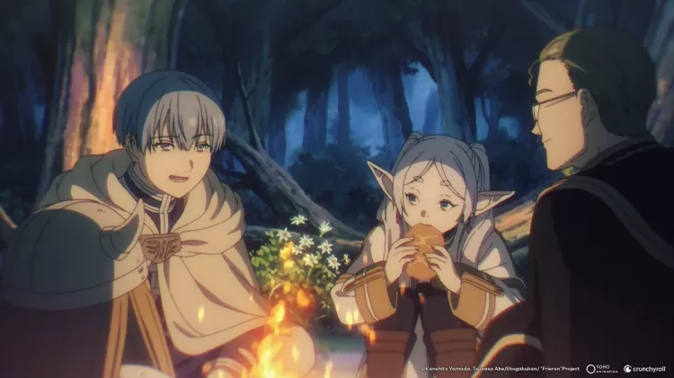
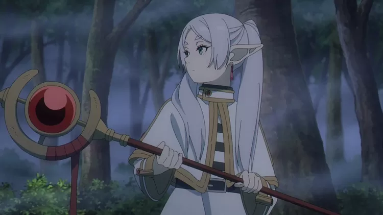

O fenômeno 'Frieren': como uma elfa introspectiva conquistou os otakus
Normalmente as unanimidades entre os fãs de anime são as séries mais focadas em ação e violência, mas felizmente existem as exceções. "Frieren e a Jornada para o Além" é uma dessas produções mais diferentonas que, por vários motivos, conquistaram os fãs apresentando graças a temas mais profundos e - por que não? - reflexivos? Nós do Splash vamos tentar explicar como "Frieren" se tornou uma das queridinhas dos otakus nesse ano de 2023.
Para começar, "Frieren e a Jornada para o Além" é uma criação a quatro mãos, roteirizada por Kanehito Yamada e com desenhos de Tsukasa Abe, e o mangá é publicado na Shonen Sunday da Shogakukan, uma das três maiores revistas dedicadas ao público adolescente masculino no Japão. Atualmente é um dos mangás de maior relevância do almanaque, fazendo companhia a "Call of the Night", o eterno "Detetive Conan" e o adorável "Komi Não Consegue se Comunicar", mesmo que "Frieren" tenha um tema menos comum.
A trama é ambientada em um mundo mágico, mas em vez de acompanharmos a jornada de um grupo ao estilo RPG indo destruir o grande senhor do mal, "Frieren" se passa depois desse evento. O grupo de heróis foi recebido nos braços da população, mas aí cada um vai para seu canto, inclusive a elfa Frieren. As décadas se passam e seus companheiros humanos vão envelhecendo, até chegarmos na morte do antigo líder Himmel.
Por ser uma elfa, o tempo de vida de Frieren é gigante, então ela é acostumada a não viver com a mesma intensidade dos humanos. Porém, ver a morte de uma pessoa tão próxima a fez perceber que não aproveitou sua companhia como deveria, e a partir dali Frieren passa a mudar suas atitudes. A primeira é aceitar novas companhias em suas jornadas, como a órfã Fern e Stark, e a segunda é tentar criar laços mais profundos com essas pessoas para não se arrepender novamente.
Rapidamente "Frieren" cresceu entre os leitores, alcançando milhões de cópias vendidas dos volumes encadernados e aparecendo bem posicionado em premiações como a "Kono Manga ga Sugoi" e vencendo os prêmios Manga Taisho e também a premiação cultural Osamu Tezuka em 2021. E com esse sucesso, parecia óbvio que logo um anime de "Frieren" seria anunciado.
A revelação rolou em setembro de 2022, dois anos após o início da publicação do mangá, e já surpreendeu com uma equipe de peso. Com produção do estúdio Madhouse (de "Overlord") e direção assinada por Kenichiro Sato (de "Bocchi The Rock"), o anime soube captar toda a essência do mangá em um espetáculo audiovisual. Não só os personagens estão bem animados e apresentam cenas criativas, mas a trilha sonora de Evan Call (de "Violet Evergarden") tem como função nos deixar imersos na introspecção da Frieren.
Tematicamente falando, "Frieren" não é tão diferente de outras séries de ambientação ao estilo RPG. Vamos acompanhar as aventuras de Frieren, alguns combates empolgantes e os personagens crescendo de acordo com os ensinamentos, mas o ponto fora da curva aqui é o clima introspectivo da protagonista e da própria história. Acompanhar "Frieren" não dá aquela satisfação de ver um grupo de heróis vencendo um desafio, e sim nos coloca para pensar a própria forma como lidamos com o tempo e com os laços afetivos.